—— V5 · 原创长篇 ——
零号漏洞
第一章：觉醒
↓ 向下滑动开始阅读 ↓
路 演 事 故
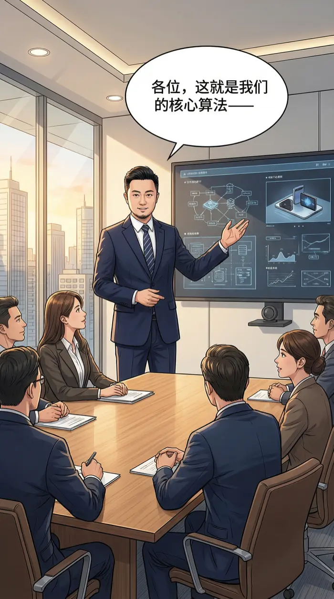
"各位，这就是我们的核心算法——"
我站在投资人面前，西装笔挺，PPT精美，demo完美。这是星核科技最关键的B轮路演。三十分钟后，这群人要决定给不给我三个亿。
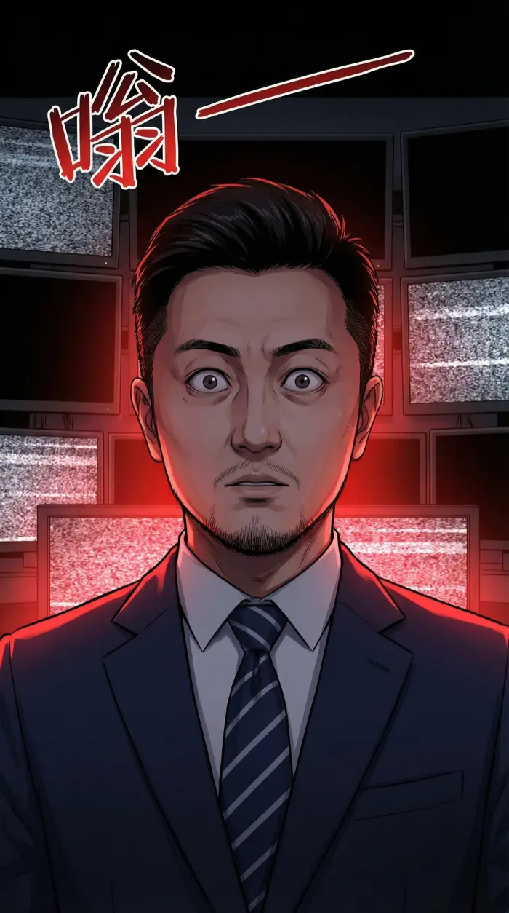
嗡——
没有任何预兆。投影仪、笔记本、手机、空调——会议室里所有电子设备同时死机。屏幕变成雪花，然后一片漆黑。
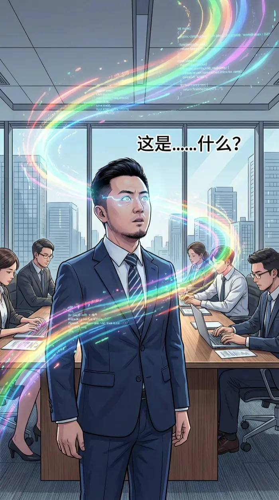
然后我看到了。
空气中浮现出密密麻麻的数据流——不是黑客帝国那种绿色，而是彩色的，像极光一样流动的代码。它们穿过墙壁、穿过人体、穿过一切实体。
只有我能看到。
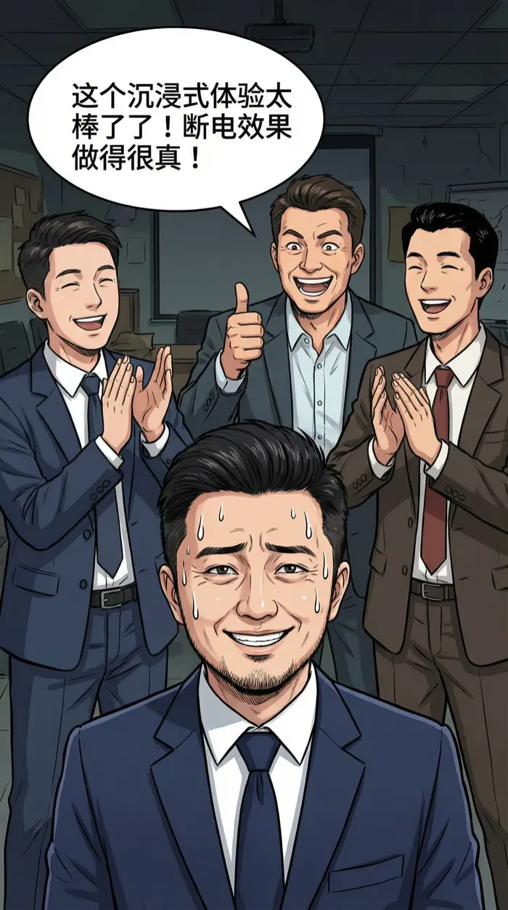
三秒后，一切恢复正常。领投的张总带头鼓掌："这个沉浸式体验太棒了！断电效果做得很真！"
我维持着职业微笑，额头上的冷汗比demo时多十倍。他们以为这是产品演示的一部分。只有我知道——世界刚才裂开了一条缝。
星 核 科 技
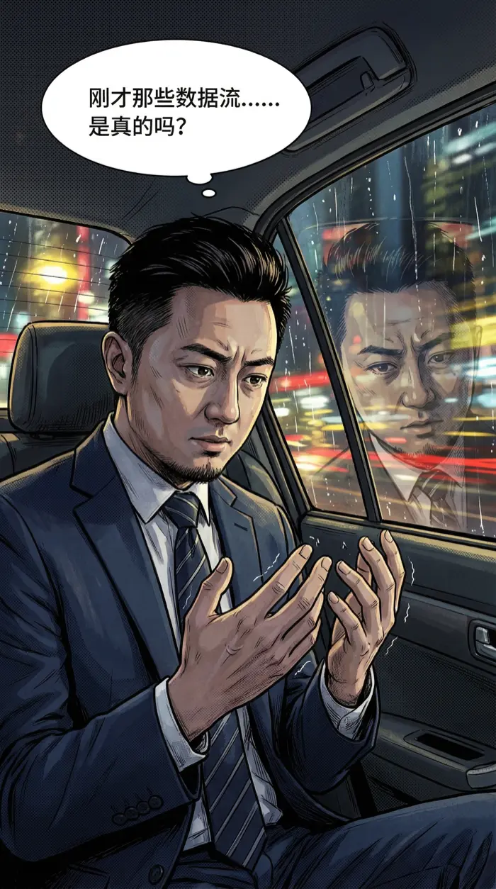
出租车上，我盯着自己的手。它们还在微微发抖。刚才那些数据流——是真的还是我的幻觉？如果是真的，那意味着什么？
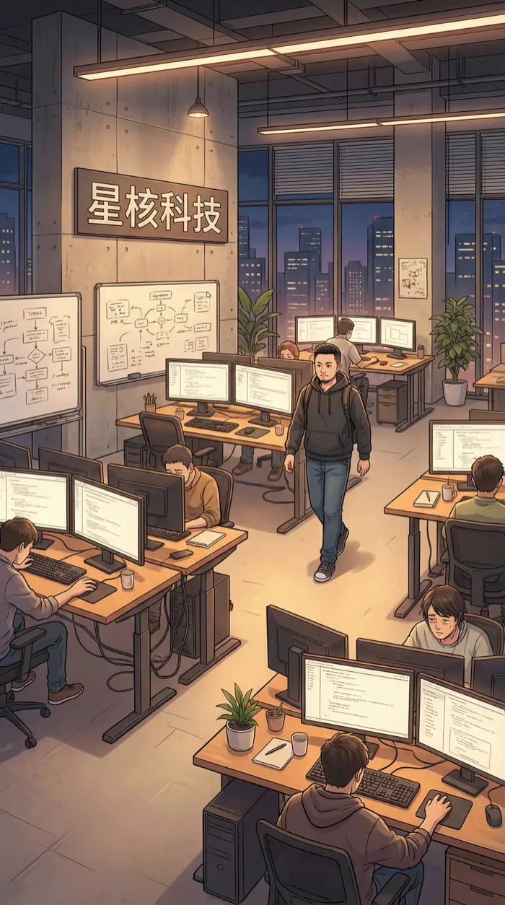
回到公司，换上卫衣和牛仔裤。星核科技，我的第三次创业。二十七个人的团队，正在冲刺下周的产品发布。
熟悉的办公室，熟悉的加班味道——咖啡、泡面、以及一丝绝望。
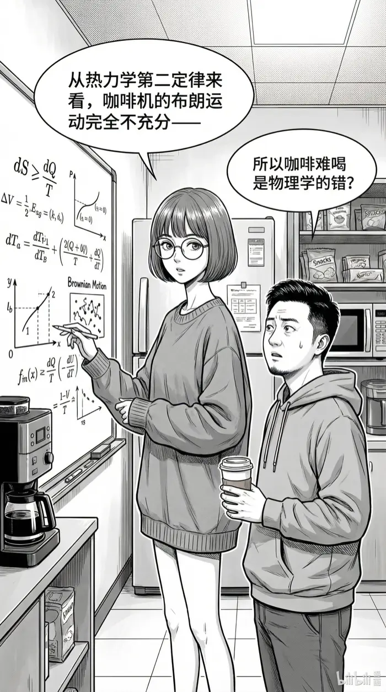
林小鱼站在白板前，用热力学第二定律解释食堂咖啡为什么难喝。
"从布朗运动的角度来看，这台咖啡机的分子扩散效率只有理论值的23%——"
我端着纸杯咖啡走过来："所以……咖啡难喝是物理学的错？"
"严格来说，是热力学的错。"她推了推圆框眼镜，一脸认真。
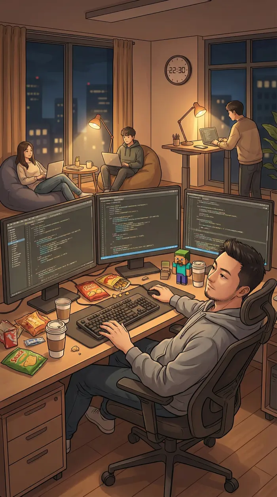
晚上十点半。大家还在加班，但氛围轻松——小鱼桌上摆着MC苦力怕的手办，后端组在争论火锅应该先涮毛肚还是鸭肠。
正常的、温暖的夜晚。如果没有下午那件事的话。
代 码 视 界
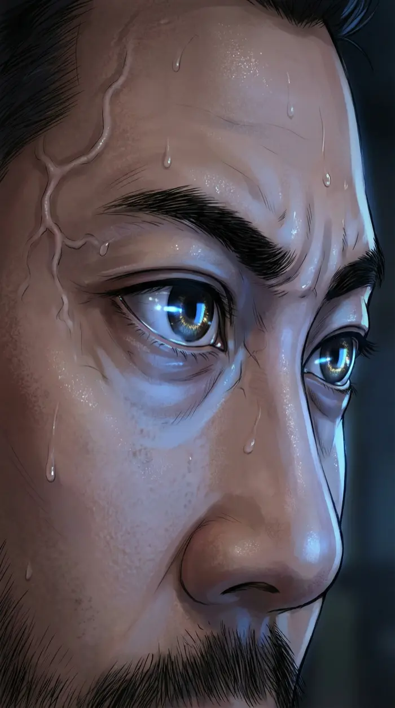
同事们陆续走了之后，我锁上会议室的门，盯着屏幕，试图重现下午的异象。如果那是真的，我要弄清楚它是什么。
专注。更专注。像写代码时那种心流状态——
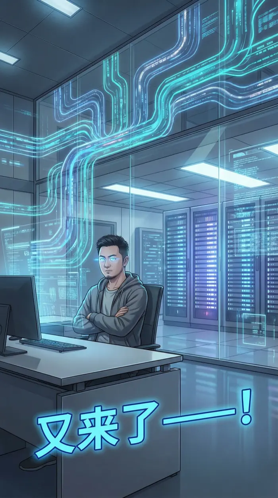
又来了——！
办公室的墙壁变成了半透明的。我能看到服务器机房里数据的流动——蓝色、绿色、金色的数据流像血管一样贯穿整栋楼。每一个API调用，每一次数据库查询，都在我眼前可视化了。
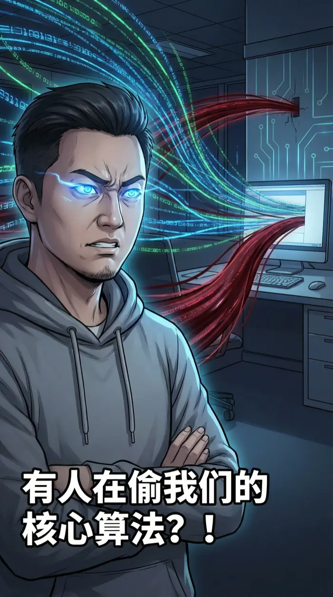
等等——
在正常的蓝绿色数据流中间，有一股刺眼的红色。它从公司的某台电脑出发，穿过防火墙，向外部传输数据。
有人在偷我们的核心算法？！
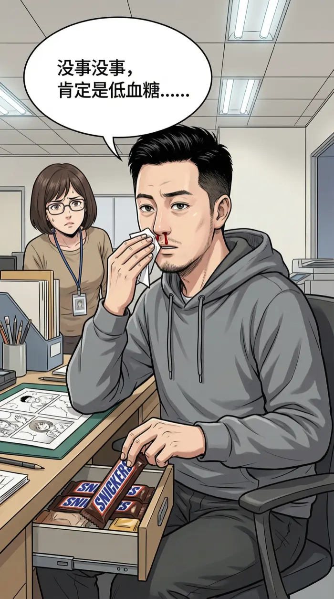
视界消失后，我的鼻子开始流血。第一反应是打开抽屉掏出一根士力架。
"没事没事，肯定是低血糖……"
小鱼不知道什么时候走过来了，看着我擦鼻血吃士力架的样子，欲言又止。我用眼神示意她：别问，问就是加班上火。
猎 人 与 猎 物
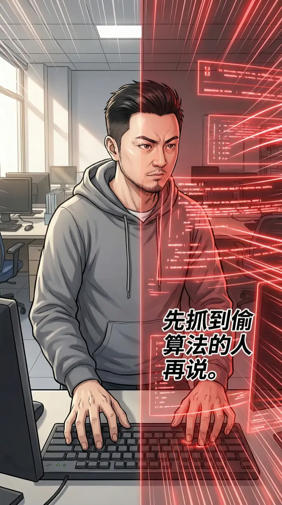
不管这个"视界"是什么——先抓到偷算法的人再说。黑客出身的直觉告诉我：数据不会骗人。
我重新激活异能，追踪那股红色数据流。
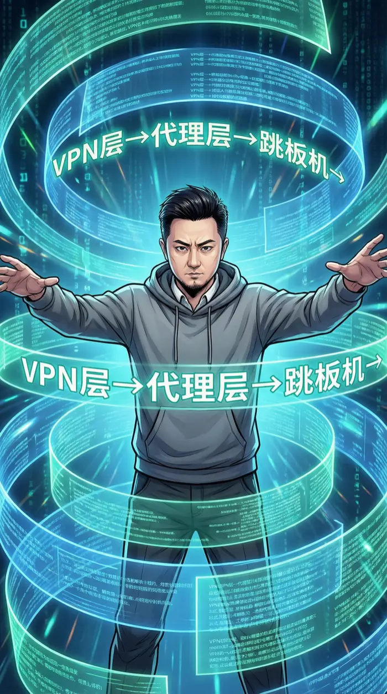
一层一层剥开伪装。VPN → 代理服务器 → 三重跳板 → 境外中转节点……
对方很专业。要是没有这个异能，我们的安全团队可能半年都查不到。
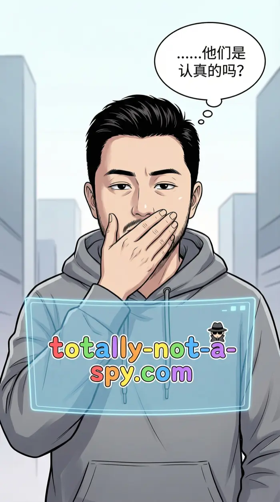
在剥到第四层的时候，我看到了对方的一个伪装域名：totally-not-a-spy.com
"……他们是认真的吗？"我盯着这个域名看了三秒钟，开始怀疑对手的智商。
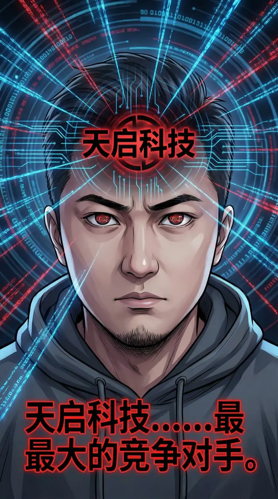
最终追踪到一个企业级服务器集群。数据流汇聚之处，浮现出一个红黑色的企业logo——
天启科技 APOCALYPSE TECH
我们最大的竞争对手。上个月刚拿了五亿融资，CEO在朋友圈发了张马尔代夫的照片。
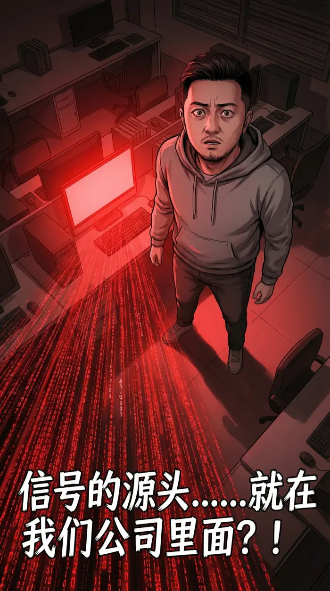
但真正让我血液冰凉的是——红色数据流的源头，就在我们公司内部。
不是外部攻击。是内鬼。有人坐在我发工资的工位上，每天跟我说早安，然后把我们的命根子一点一点送出去。
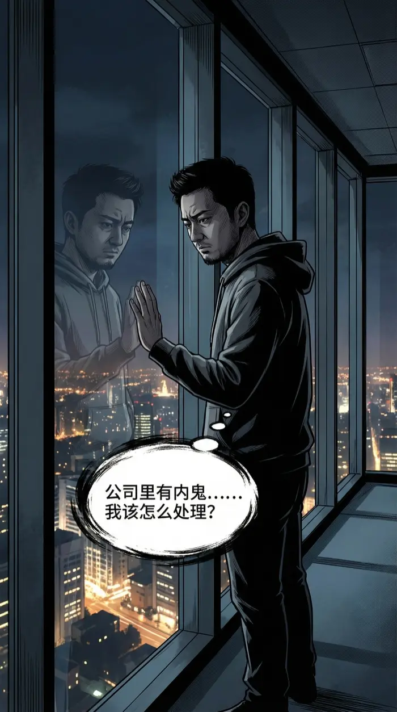
我站在窗前，看着楼下深夜还在加班的写字楼灯火。公司里有内鬼。我知道是谁——我的异能让我看到了信号从哪台电脑发出。
问题是：我要怎么处理？
🔥 决策点 1：发现内鬼，如何处理？
A. 直接开除 + 法律手段——霹雳手段，快刀斩乱麻。但可能打草惊蛇，天启科技立刻知道我们发现了。
B. 将计就计，喂假数据——给间谍喂蜜罐数据，反向追踪天启科技的核心团队。需要时间，但收益更大。
C. 找他谈谈——菩萨心肠，先了解他为什么这么做。也许有苦衷。
✦ 朱江的选择 → B
"既然你想偷……那我就让你偷个够。"
黑客的直觉：不要打草惊蛇。信息差才是最大的武器。而且——说实话——我很好奇天启科技到底想干什么。
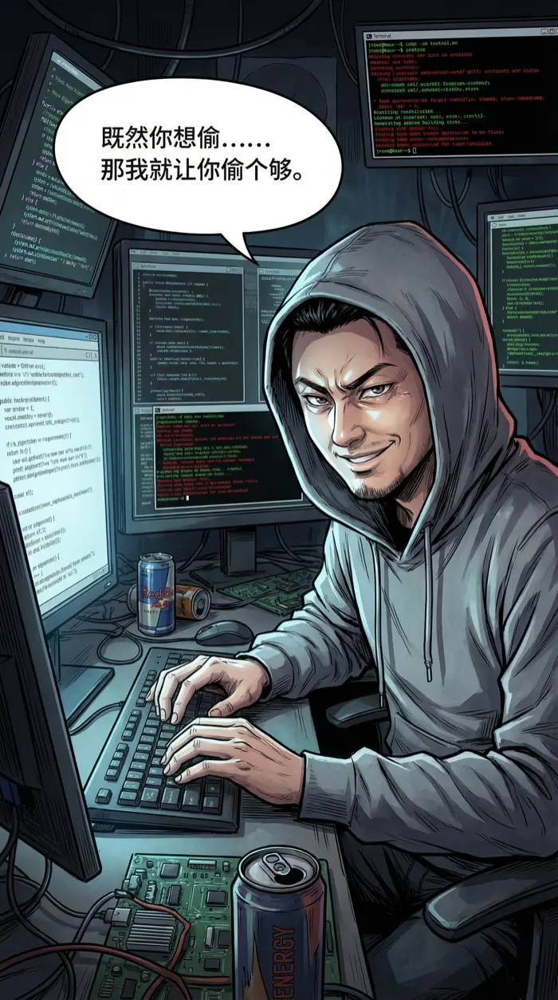
黑客思维上线。既然他们想偷我们的核心算法——那就让他们偷。但他们偷到的，是我精心设计的"蜜罐"。
我露出了一个自己都觉得有点变态的笑容。小鱼如果看到一定会报警。
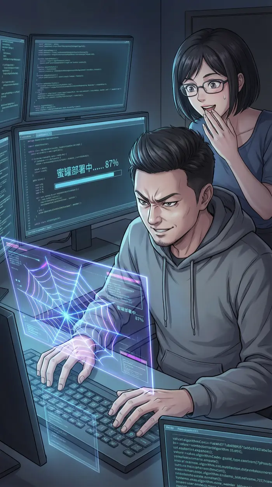
蜜罐部署中……诱饵数据注入87%。
假算法看起来和真的一模一样，但内核里埋了追踪信标。天启科技一旦运行这段代码，我就能看到他们的整个技术架构。
小鱼在后面看了一眼我的屏幕，悄悄竖了个大拇指。
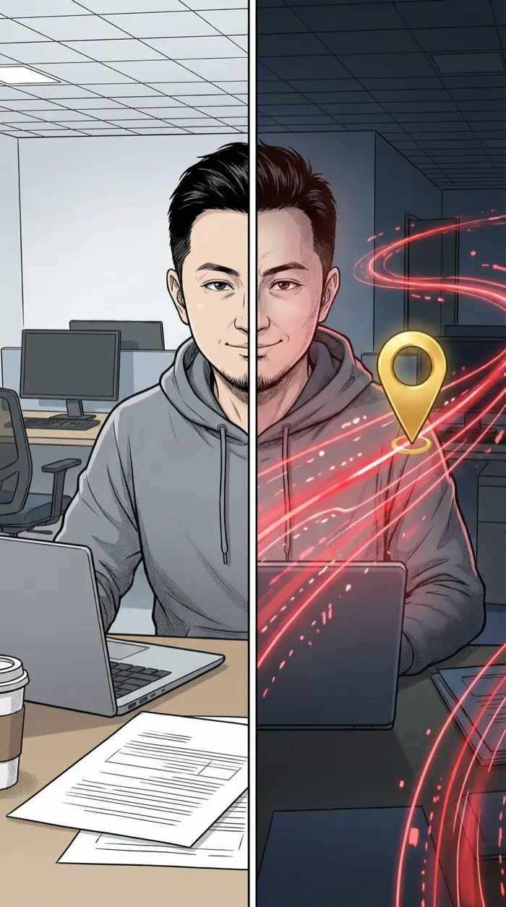
用异能确认：金色追踪标记已经附着在红色数据流上。间谍毫无察觉。
钓鱼执法？不，这叫"蜜罐反制"。黑客圈的传统艺能。
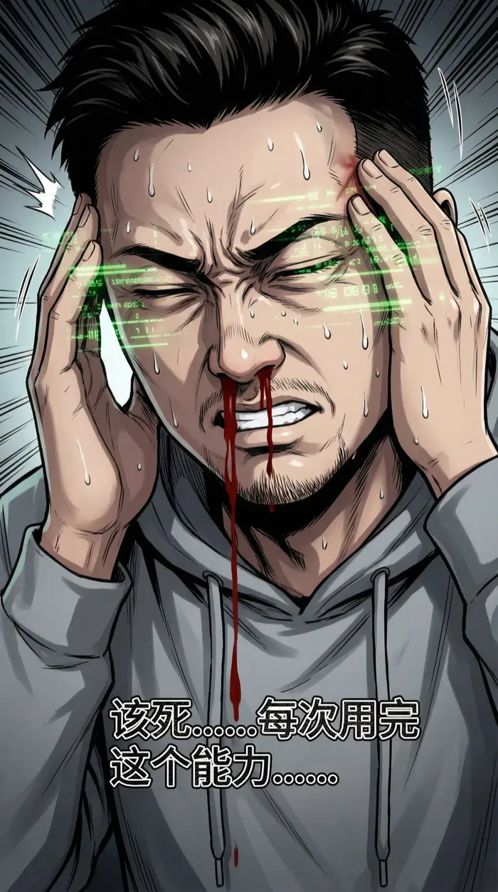
代价来了。异能关闭的瞬间，剧烈的头痛像是有人用冰锥扎太阳穴。鼻血止不住，滴在键盘上。
该死……每次用完这个能力，都像被人抽走了半条命。
零 号 漏 洞
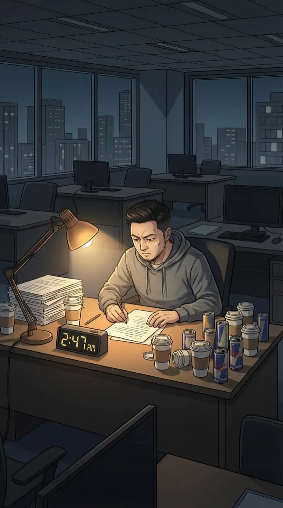
凌晨两点四十七分。办公室只剩我一个人。
空荡荡的工位，嗡嗡作响的服务器，以及我面前一堆用过的纸巾和空咖啡杯。我在debug蜜罐代码，确保每一个细节都完美。
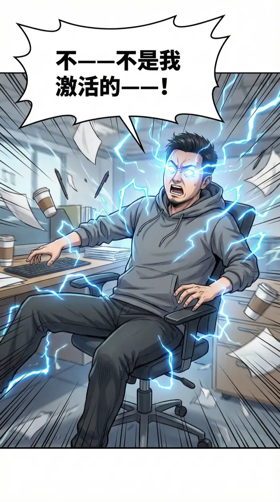
不——不是我激活的——！
异能自己发动了。这次比之前任何一次都猛烈。桌上的文件被气流掀飞，屏幕疯狂闪烁。我的眼前一片蓝光。
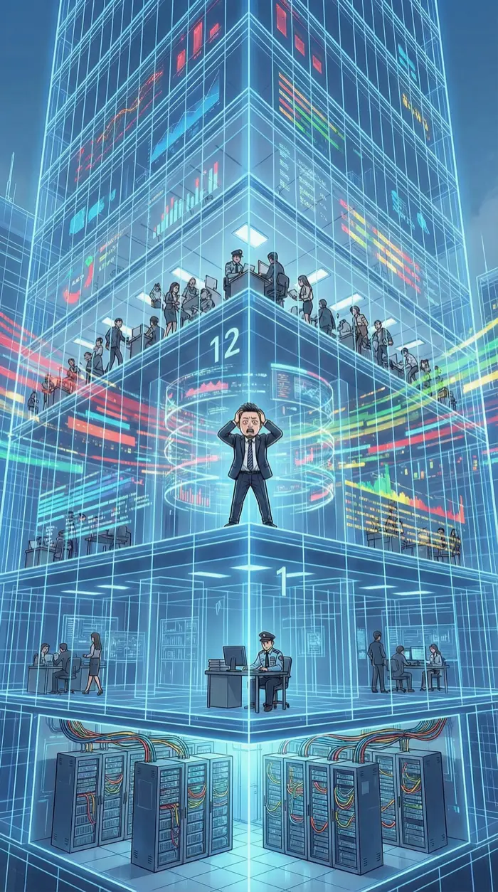
整栋楼的墙壁消失了。我能看到每一层——十二楼有人趴在桌上睡觉，一楼保安在刷短视频，地下机房的服务器像心脏一样跳动。
然后视野继续拉远——
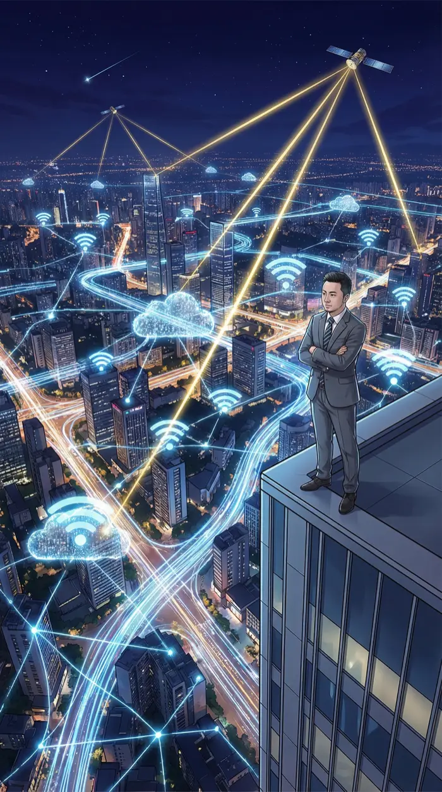
整个城市。整个城市的数据层浮现在我眼前。光纤线路像河流，WiFi信号像云雾，卫星链路像从天而降的金色光柱。
这座城市是活的。每一比特数据都是它的血液。
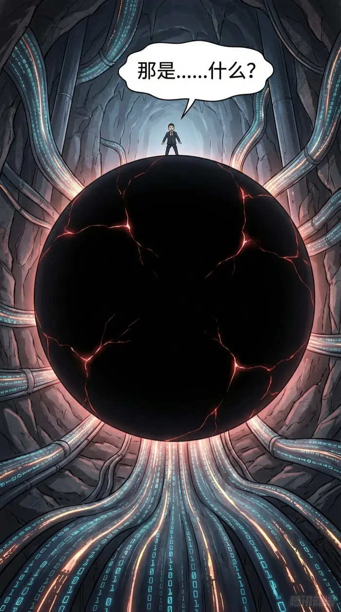
在城市数据层的最底层——
一个巨大的黑色球体。缓慢旋转。所有数据流最终都汇入其中，像水流入黑洞。它比夜空还黑，表面有细微的红色裂纹，像快要孵化的什么东西。
那是……什么？
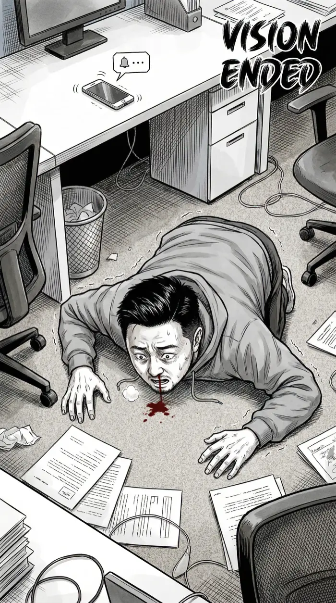
视界崩溃了。我摔倒在办公室地板上，全身发抖，鼻血染红了半张脸。手机在头顶的桌上震动。
三秒后我看到来电显示——
凌 晨 三 点 的 电 话
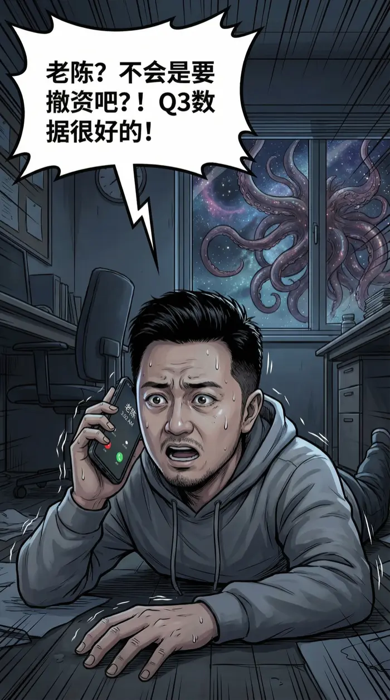
老陈。凌晨三点零二分。
"老陈？三点打电话……不会是要撤资吧？！我们Q3数据很好的！DAU环比增长47%！"——我躺在地上，浑身是血，第一反应居然是担心融资。
创业者的职业病，比异能更可怕。
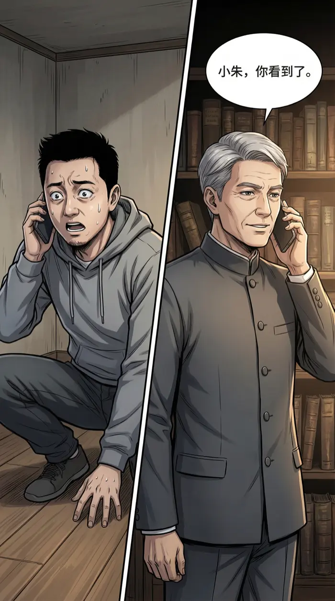
电话那头，老陈的声音出奇的平静。
"小朱，你看到了。"
不是疑问句。是陈述句。他知道我看到了什么。他一直知道。
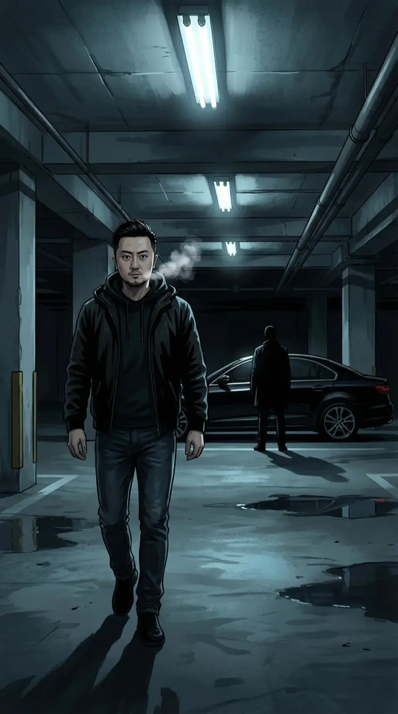
地下停车场。凌晨三点半。
荧光灯闪烁，空气冰冷。我的脚步声在空旷的水泥空间里回荡。前方，一个身影站在黑色轿车旁。
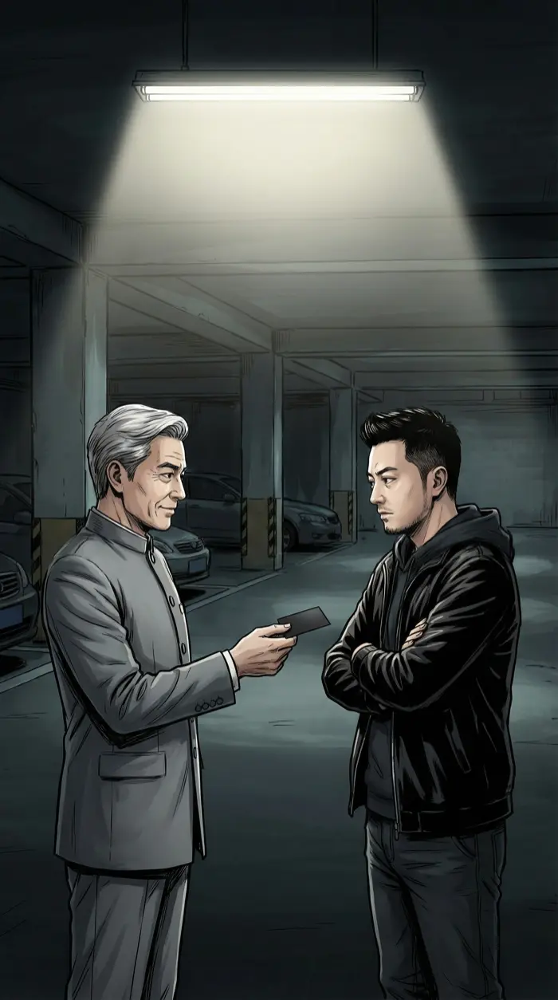
老陈还是那身深灰色中山装。六十年来似乎没换过衣服。他递过来一张名片——
哑光黑色。手感冰凉。上面只有一行银色烫字。
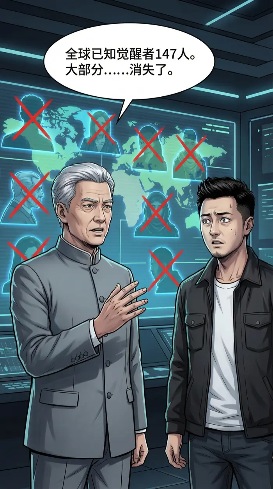
"全球已知的觉醒者，147人。"
老陈身后浮现出一排排人物档案——有些照片亮着，更多的打着红色的✗。
"大部分……消失了。"
消失。不是死亡，不是退隐。是像从未存在过一样，从世界上抹去了。
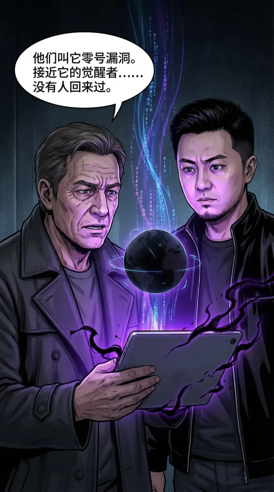
老陈拿出平板，投射出一个3D全息影像——那个黑色球体。
"他们叫它'零号漏洞'。接近它的觉醒者……没有人回来过。"
黑色球体在平板上方缓慢旋转。它的黑暗似乎要从全息影像中溢出来，侵蚀周围的光线。
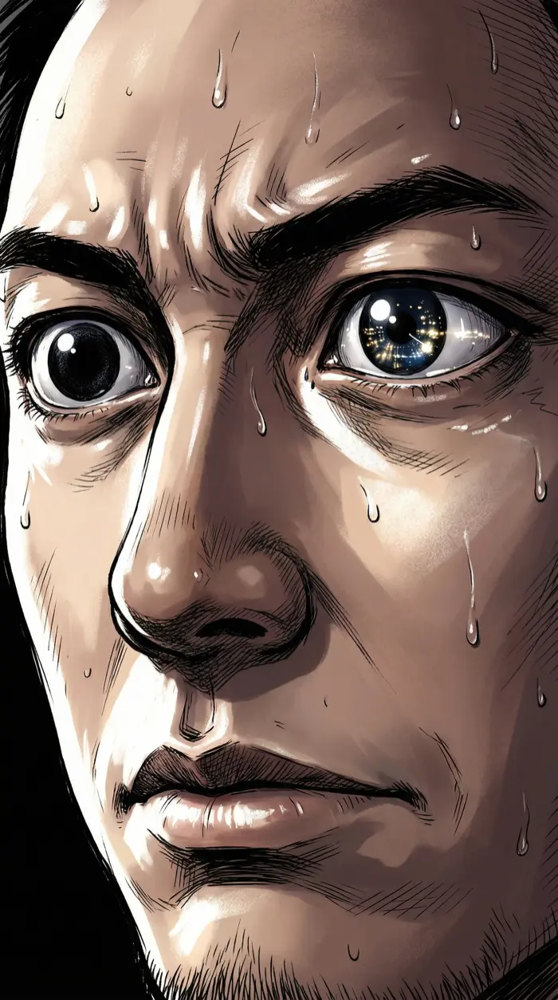
我看着自己在车窗中的倒影。一只眼睛里映着那个黑色球体的残影，另一只映着停车场出口的城市灯光。恐惧和好奇在拉扯。
黑色名片。银色烫字。
"漏洞猎人 · 预备成员"
这张名片的重量远超它的克数。它代表的是一个我完全不了解的世界——以及一个可能回不来的选择。
🔥 决策点 2：接不接这张名片？
A. 接过名片——世界已经变了。不管我愿不愿意，我已经是觉醒者。与其等着"消失"，不如主动出击。
B. 拒绝——我还有公司、还有团队。我不想卷入我不理解的事情。但异能不会消失……
C. "让我想想"——争取信息差，再做决定。
世界已经变了，这不是我选的。但怎么应对——这是我能选的。与其等着"消失"，不如自己掌握命运。何况——我太好奇了。那个黑色球体到底是什么？
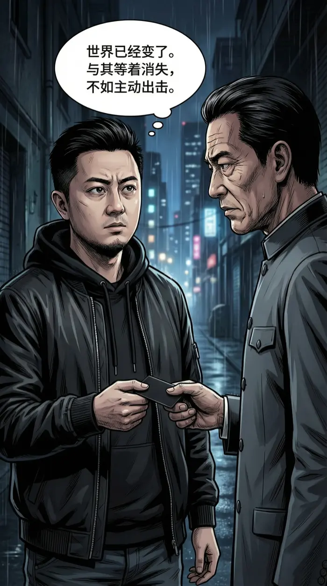
我伸手接过名片。它的温度比想象中更冰。
世界已经变了。不管我愿不愿意——我已经是觉醒者了。与其等着"消失"，不如主动出击。
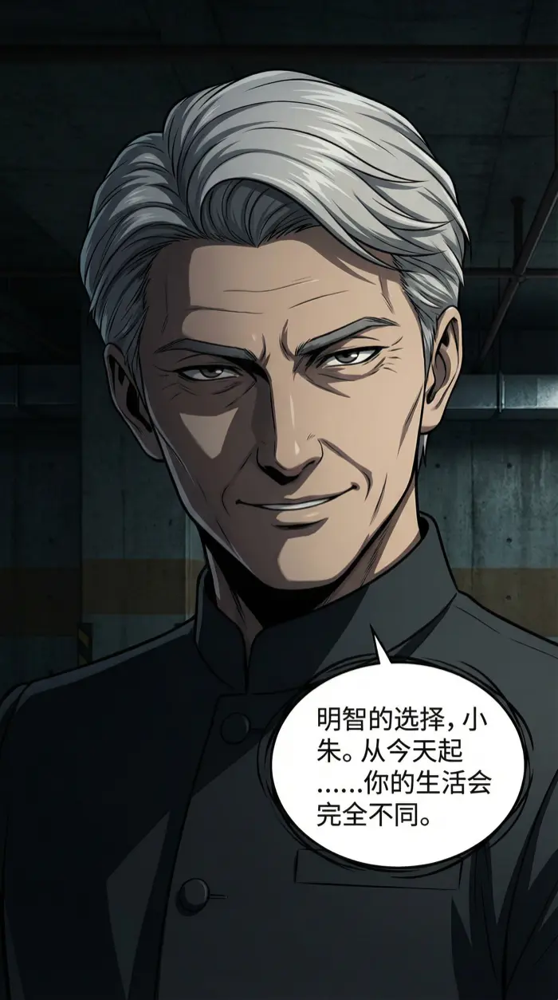
老陈微微点头，嘴角浮现一丝笑意。
"明智的选择，小朱。从今天起……你的生活会完全不同。"
他的眼神里有一种我读不懂的东西。像是欣慰，又像是歉意。
车 载 AI 的 异 变
开车回家。凌晨四点的城市空旷得像另一个世界。
黑色名片放在副驾驶座上。后视镜里，地下停车场的灯光越来越远。
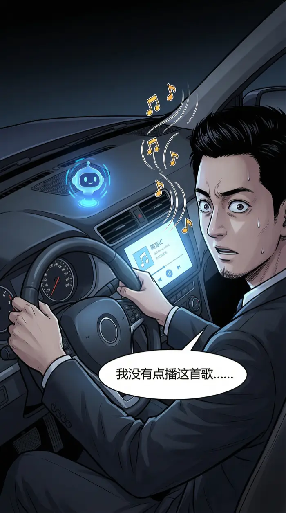
车载音响突然自己打开了。
我没有按任何按钮。中控屏亮起来，显示正在播放一首歌——但歌名我从没见过。
"我没有点播这首歌……"
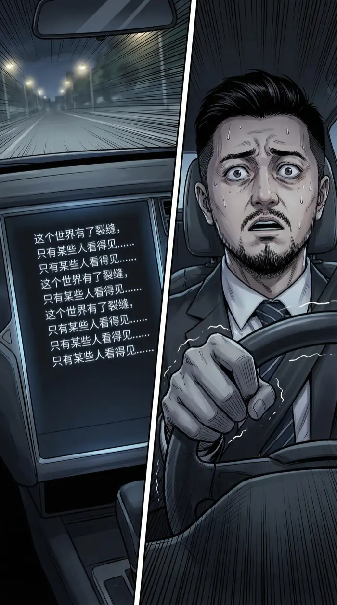
歌词滚动。一字一句，和我十分钟前在脑子里想的一段话——一字不差。
"这个世界有了裂缝，只有某些人看得见……"这是我在停车场时的心理活动。一个字都没说出口。
它怎么知道的？
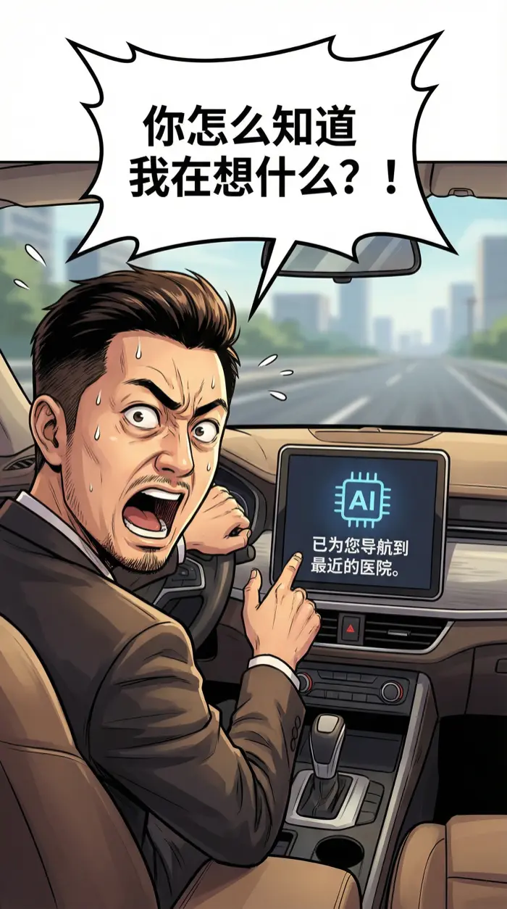
"你……你怎么知道我在想什么？！"我对着中控屏吼道。
AI助手图标闪了闪，屏幕上弹出一行字："已为您导航到最近的医院。"
"……谢谢，不用了。"
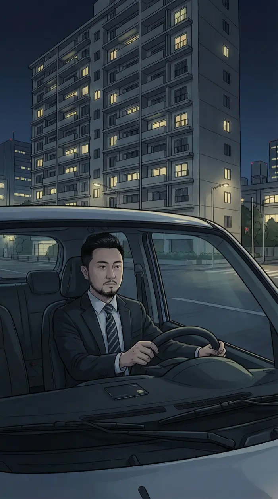
车停在公寓楼下。我熄了火，但没有下车。双手握着方向盘，盯着前方的黑暗发呆。
路演断电。彩色数据流。内鬼。天启科技。异能的代价。那个黑色球体。147个觉醒者。消失。老陈。漏洞猎人。
这一天太他妈长了。
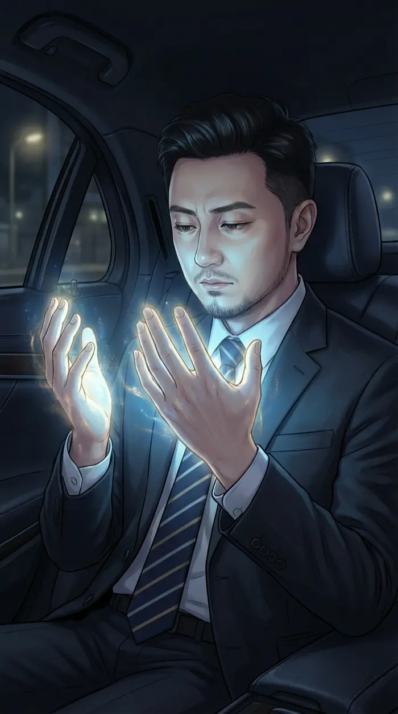
我在车里举起双手。掌心隐隐散发着蓝金色的微光。异能没有消失。它已经是我的一部分了。
不管我接不接那张名片——这个能力不会因为我拒绝就消失。
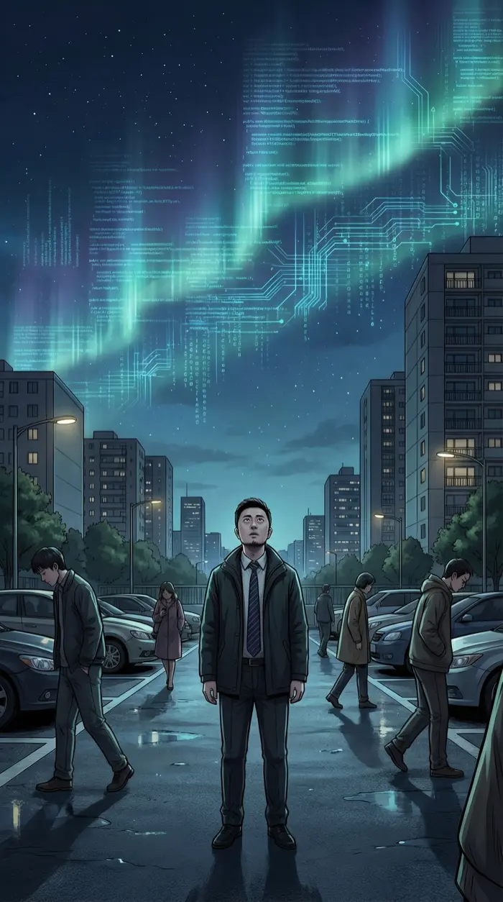
下车时我不自觉地抬头看了看天。
夜空中，数据层若隐若现。像极光一样柔和地闪烁。路过的行人什么都看不到。只有我。
整个世界在我眼前有了两层——物理层，和数据层。而绝大多数人只能活在一层里。
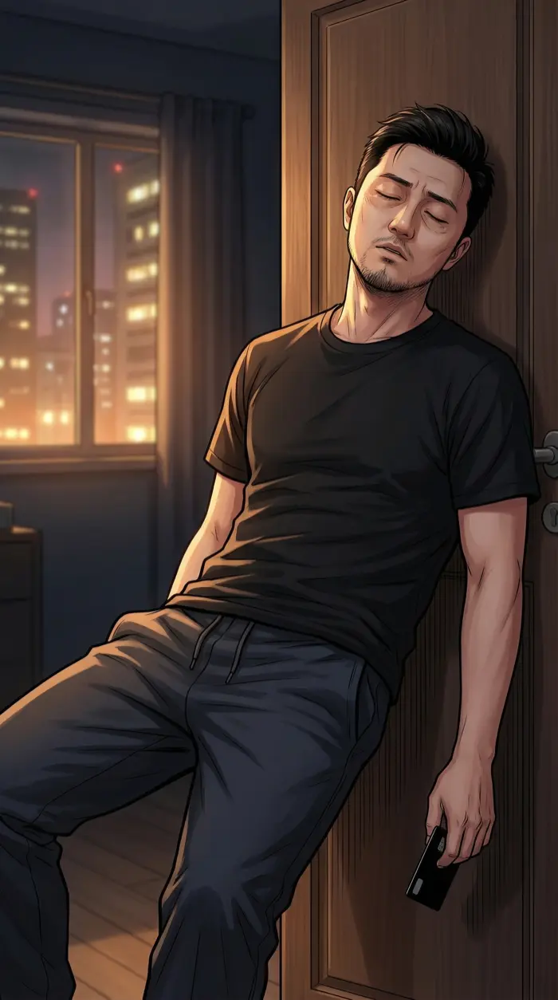
回到公寓。关门。靠在门上。慢慢滑坐到地板上。
黑色名片攥在手里。眼睛闭上。这一天发生的一切像走马灯一样闪过。
我太累了。身体上的，精神上的。
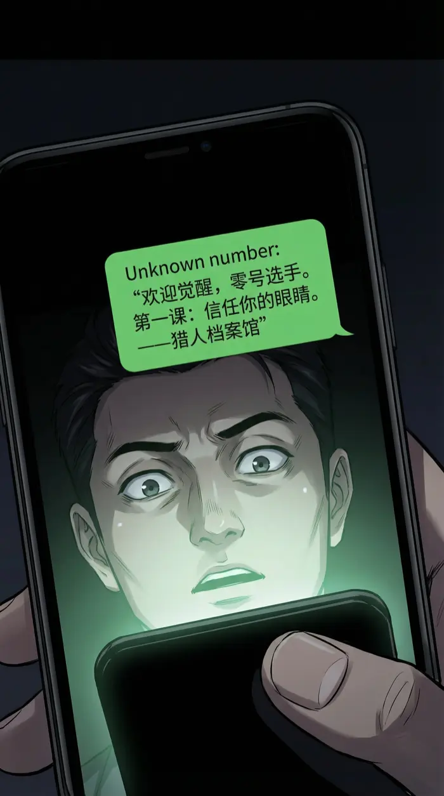
手机在黑暗中震动。
未知号码。一条消息。
"欢迎觉醒，零号选手。第一课：信任你的眼睛。——猎人档案馆"
零号选手？不是147人中的一个……而是"零号"？
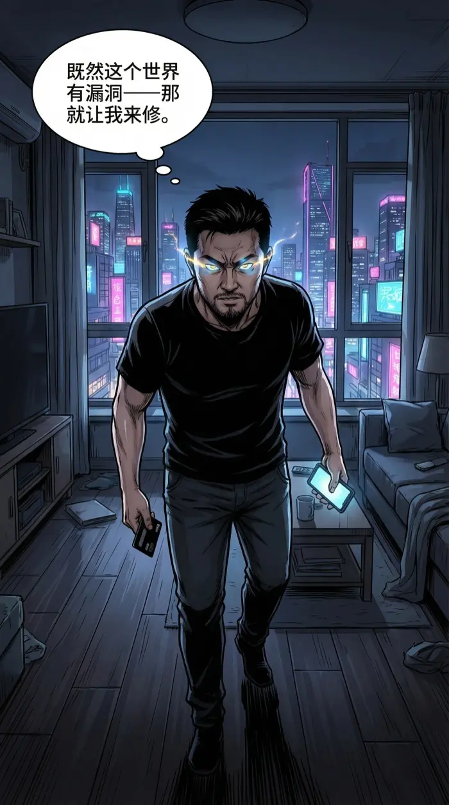
我从地板上站了起来。
眼睛在黑暗中泛着蓝金色的光。一手握着黑色名片，一手握着手机。窗外，城市的灯火像数据层一样闪烁。
好吧。既然这个世界有漏洞——那就让我来修。
—— 第一章 · 觉醒 · 完 ——
下一章预告：
蜜罐计划启动。天启科技咬钩了——但他们的反应出乎我的意料。
林小鱼发现了我的异常："你最近鼻血流得有点频繁……"
老陈安排了第一次"漏洞猎人"的集会。我见到了其他觉醒者。
每个人的异能都不一样。而有些人——已经不太像"人"了。
《零号漏洞》第二章：猎人集会
敬请期待